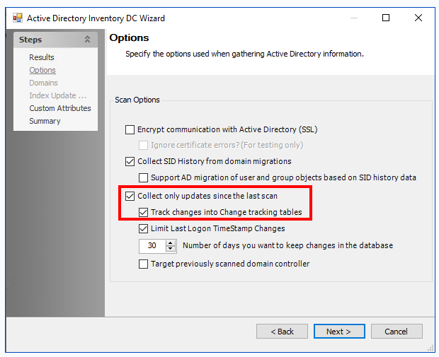

Symptom
When viewing the Attribute Changes in the Reports section of the Access Information Center (AIC), no updates appear for users, even though changes have been made since the last Active Directory (AD) Inventory scan.
Cause
When differential scans for AD Inventory are not running, attribute changes are not collected.
Resolution
Ensure that differential scans for AD Inventory are enabled and running. This will allow the AIC to capture and report any changes made to AD user attributes.
-
To enable differential scanning of AD Inventory, enable the Collect only updates since the last scan option in the query configuration as shown below:
 -
For further information on customizing the AD > 1-AD_Scan job, please visit: https://helpcenter.netwrix.com/bundle/EnterpriseAuditor_11.6/page/Content/EnterpriseAuditor/Solutions/ActiveDirectoryInventory/1-AD_Scan.htm.